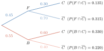

- ប្រូបាបមានលក្ខខណ្ឌ
- ទ្រឹស្តីបទបៃយេស
ការគណនាប្រូបាប គឺជាផ្នែកមួយដែលមានការទាក់ទាញអារម្មណ៍ខ្លាំងជាងគេ និងមានការពិបាកតិចជាងគេនៅក្នុងគណិតវិទ្យា ។ បញ្ហាទាក់ទងនឹងល្បែងចៃដន្យ ជាពិសេសល្បែងបោះគ្រាប់ឡុកឡាក់ក៏ដូចជាបញ្ហាទាក់ទងនឹងការរស់នៅប្រចាំថ្ងៃរបស់មនុស្សក្នុងពិភពលោក ជាប្រភពនៃការគណនាប្រូបាប ។ ការសិក្សាស្រាវជ្រាវពីការគណនាប្រូបាបត្រូវបានយកចិត្តទុកដាក់ដោយគណិតវិទូជាច្រើនដូចជា Blaise, Pascal, Cardan, Feunat, Bernoulli, Laplace, Poisson, ជាពិសេសគណិតវិទូរុស្ស៊ី AN Kolmogorov នៅឆ្នាំ 1993 បានសរសេររចនាសម្ព័ន្ធស្វ័យសត្យជាទ្រឹស្តីប្រូបាប ។
មេរៀនទី 1 ប្រូបាបមានលក្ខខណ្ឌ
វត្ថុបំណង
- កំណត់និយមន័យនៃប្រូបាបមានលក្ខខណ្ឌ
- បង្ហាញភាពមិនទាក់ទងគ្នានៃពីរព្រឹត្តិការណ៍ក្នុងលំហសំណាក ។
1. ការគណនាប្រូបាប
និយមន័យ ប្រូបាបនៃព្រឹត្តិការណ៍ \(\displaystyle A\) ជាផលធៀបនៃចំនួនករណីស្រប និងចំនួនករណីអាច
ទំនិញ 2 មុខត្រូវបានជ្រើសរើសដោយចៃដន្យពីទំនិញ 12 មុខក្នុងនោះមានទំនិញ 4 មុខ ដែលជាទំនិញខូច ។
- ក. រកប្រូបាបដែលទំនិញទាំងពីរមុខ ជាទំនិញខូច
- ខ. រកប្រូបាបដែលទំនិញទាំងពីរមុខ ជាទំនិញល្អ
- គ. រកប្រូបាបដែលគេយកបានយ៉ាងតិចទំនិញមួយមុខជាទំនិញខូច ។
- ក. តាង \(\displaystyle A\) ជាព្រឹត្តិការណ៍ជ្រើសរើសបានទំនិញទាំងពីរមុខជាទំនិញខូច យើងបាន \(\displaystyle P(A) = \frac{{}^{4}C_{2}}{{}^{12}C_{2}} = \frac{1}{11}\)
- ខ. តាង \(\displaystyle B\) ជាព្រឹត្តិការណ៍ជ្រើសរើសបានទំនិញទាំងពីរមុខជាទំនិញល្អ យើងបាន \(\displaystyle P(B) = \frac{{}^{8}C_{2}}{{}^{12}C_{2}} = \frac{14}{33}\)
- គ. តាង \(\displaystyle C\) ជាព្រឹត្តិការណ៍យកបានយ៉ាងតិចទំនិញមួយជាទំនិញខូច នោះ \(\displaystyle \overline{C} = B\) ដូច្នេះ \(\displaystyle P(C) = 1 - P(\overline{C}) = 1 - P(B) = 1 - \frac{14}{33} = \frac{19}{33}\) ។
តុវែងមួយមាន 5 កន្លែងអង្គុយ ។ គេរៀបនិស្សិត 5 នាក់ឱ្យអង្គុយកន្លែងទាំង 5 នេះ ។ គណនាប្រូបាបដែលលោកដេត និងលោកខឿន អង្គុយនៅចុងតុម្ខាងម្នាក់ ។ ដោយសន្មតថាអ្នកទាំង 5 មានឈ្មោះខុសៗគ្នា ។
តាង \(\displaystyle A\) ជាព្រឹត្តិការណ៍ដែលលោកដេត និងលោកខឿនអង្គុយនៅចុងតុម្ខាងម្នាក់
ក្នុងថង់មួយមានឃ្លីក្រហម 4 និងឃ្លីខៀវ 6 ។ គេចាប់យក 2 ព្រមគ្នាដោយចៃដន្យ ។
- ក. រកប្រូបាបដែលចាប់បាន ក្រហមទាំង 2
- ខ. រកប្រូបាបដែលចាប់បាន ខៀវទាំង 2
- គ. រកប្រូបាបដែលចាប់បានឃ្លី 2 មានពណ៌ដូចគ្នា ។
មើលចម្លើយ
ក. \(\displaystyle \frac{2}{15}\) ខ. \(\displaystyle \frac{1}{3}\) គ. \(\displaystyle \frac{7}{15}\)
គូស្វាមីភរិយា 3 គូ ឈរជាជួរដើម្បីថតរូបអនុស្សាវរីយ៍ ។ រកប្រូបាបដែលប្តីនិងប្រពន្ធមួយគូៗត្រូវតែឈរជាប់គ្នា ។ ចម្លើយ \(\displaystyle \frac{1}{15}\) ។
2. ប្រូបាបមានលក្ខខណ្ឌ
2.1. និយមន័យ
គេដឹងថាសិស្សដែលរៀនចប់ចេញពីវិទ្យាល័យមួយមានចំនួន 200 នាក់ ដែលក្នុងនោះមានសិស្សស្រី 90 នាក់ និងសិស្សប្រុស 110 នាក់ ។ ក្នុងចំណោមនោះមានតែសិស្សស្រី 27 នាក់ប៉ុណ្ណោះដែលបន្តការសិក្សាទៅឧត្តមសិក្សា ។ ឯសិស្សប្រុសមានតែ 66 នាក់ដែលបន្តការសិក្សា ។ គេចង់ជួបសម្ភាសន៍សិស្សម្នាក់ក្នុងចំណោមសិស្សទាំងនេះ ។ រកប្រូបាបដែលអ្នកសម្ភាសន៍
- ក. ជួបសិស្សស្រី
- ខ. ជួបសិស្សប្រុស
- គ. ជួបសិស្សស្រីដែលបន្តការសិក្សា
- ឃ. ជួបសិស្សប្រុសដែលបន្តការសិក្សា
- ង. ជួបសិស្សបន្តការសិក្សា
- ច. ជួបសិស្សបន្តការសិក្សាដោយបានដឹងមុនថាជាសិស្សស្រី
- ឆ. ជួបសិស្សស្រីដោយបានដឹងមុនថាជាសិស្សបន្តការសិក្សា ។
គេអាចស្រង់ទិន្នន័យទាំងអស់ដាក់ក្នុងតារាង
| ការសិក្សា / ភេទ | ស្រី | ប្រុស | សរុប |
| បន្តការសិក្សា | 27 | 66 | 93 |
| មិនបន្តការសិក្សា | 63 | 44 | 107 |
| សរុប | 90 | 110 | 200 នាក់ |
តាង \(\displaystyle S\) ជាលំហសំណាក
- \(\displaystyle F\) ជាព្រឹត្តិការណ៍ជួបសិស្សស្រី
- \(\displaystyle B\) ជាព្រឹត្តិការណ៍ជួបសិស្សប្រុស
- \(\displaystyle C\) ជាព្រឹត្តិការណ៍ជួបសិស្សបន្តការសិក្សា
- \(\displaystyle \overline{C}\) ជាព្រឹត្តិការណ៍ជួបសិស្សមិនបន្តការសិក្សា ។
គេបាន ព្រឹត្តិការណ៍ជួបសិស្សស្រីដែលបន្តការសិក្សា ជាព្រឹត្តិការណ៍ \(\displaystyle F \cap C\) ។ ព្រឹត្តិការណ៍ជួបសិស្សប្រុសដែលបន្តការសិក្សា ជាព្រឹត្តិការណ៍ \(\displaystyle B \cap C\) ។
គេមាន សិស្សទាំងអស់ 200 នាក់ គេបាន \(\displaystyle n(S) = 200\)
- សិស្សស្រី 90 នាក់ : \(\displaystyle n(F) = 90\)
- សិស្សប្រុស 110 នាក់ : \(\displaystyle n(B) = 110\)
- សិស្សស្រីដែលបន្តការសិក្សា 27 នាក់ : \(\displaystyle n(F \cap C) = 27\)
- សិស្សប្រុសដែលបន្តការសិក្សា 66 នាក់ : \(\displaystyle n(B \cap C) = 66\)
- សិស្សបន្តការសិក្សាមានស្រី 27 ប្រុស 66 នាក់ : \(\displaystyle n(C) = 27 + 66 = 93\) ។
- ក. ប្រូបាបនៃព្រឹត្តិការណ៍ជួបសិស្សស្រី \(\displaystyle P(F) = \frac{n(F)}{n(S)} = \frac{90}{200} = 0.45\)
- ខ. ប្រូបាបនៃព្រឹត្តិការណ៍ជួបសិស្សប្រុស \(\displaystyle P(B) = \frac{n(B)}{n(S)} = \frac{110}{200} = 0.55\)
- គ.
ប្រូបាបនៃព្រឹត្តិការណ៍ជួបសិស្សស្រីដែលបន្តការសិក្សា
\[P(F \cap C) = \frac{n(F \cap C)}{n(S)} = \frac{27}{200} = 0.135\] - ឃ.
ប្រូបាបនៃព្រឹត្តិការណ៍ជួបសិស្សប្រុសដែលបន្តការសិក្សា
\[P(B \cap C) = \frac{n(B \cap C)}{n(S)} = \frac{66}{200} = 0.33\] - ច.
ប្រូបាបនៃព្រឹត្តិការណ៍ជួបសិស្សបន្តការសិក្សា ដោយដឹងមុនថាជាសិស្សស្រី បើគេដឹងមុនថាអ្នកដែលគេចង់ជួបជាសិស្សស្រីនោះ បានន័យថាគេចង់ជួបសិស្សស្រីបន្តការសិក្សាក្នុងចំណោមសិស្សស្រី ដោយចំនួនសិស្សស្រីបន្តការសិក្សាមាន \(\displaystyle n(F \cap C) = 27\) នាក់ ហើយចំនួនសិស្សស្រីមាន \(\displaystyle n(F) = 90\) នាក់ នោះប្រូបាបនៃព្រឹត្តិការណ៍ជួបសិស្សបន្តការសិក្សាដោយដឹងមុនថាជាសិស្សស្រីគឺ
\[\frac{n(F \cap C)}{n(F)} = \frac{27}{90} = 0.30 \text{ ។}\]ចំពោះផលធៀប \(\displaystyle \frac{n(F \cap C)}{n(F)}\) គេអាចសរសេរ
\[\frac{n(F \cap C)}{n(F)} = \frac{\frac{n(F \cap C)}{n(S)}}{\frac{n(F)}{n(S)}} = \frac{P(F \cap C)}{P(F)} = \frac{0.135}{0.45} = 0.3\]ប្រូបាបនេះហៅថាប្រូបាបមានលក្ខខណ្ឌនៃព្រឹត្តិការណ៍ \(\displaystyle C\) ដោយដឹងថាព្រឹត្តិការណ៍ \(\displaystyle F\) បានកើតឡើងគេកំណត់សរសេរ \(\displaystyle P_F(C)\) ឬ \(\displaystyle P(C/F)\) ។ ដូច្នេះ ប្រូបាបមានលក្ខខណ្ឌនៃ \(\displaystyle C\) ដោយដឹង \(\displaystyle F\) គឺ
\[P(C/F) = \frac{P(F \cap C)}{P(F)} = 0.3 \text{ ។}\]\(\displaystyle P(C/F)\) អានថា ប្រូបាបនៃ \(\displaystyle C\) ដោយដឹង \(\displaystyle F\) (ឬ \(\displaystyle C\) កើតក្រោយ \(\displaystyle F\))
- ឆ.
ប្រូបាបដែលជួបសិស្សស្រីដោយបានដឹងមុនថាជាសិស្សបន្តការសិក្សាបើគេដឹងមុនថាជាសិស្សបន្តការសិក្សានោះ គឺគេចង់ជួបសិស្សស្រីបន្តការសិក្សាក្នុងចំណោមសិស្សបន្តការសិក្សា ប្រូបាបនេះជាប្រូបាបមានលក្ខខណ្ឌនៃព្រឹត្តិការណ៍ \(\displaystyle F\) ដោយដឹងថាព្រឹត្តិការណ៍ \(\displaystyle C\) បានកើតឡើង
\[P(F/C) = \frac{P(C \cap F)}{P(C)} = \frac{0.135}{0.465} = 0.290 \text{ ។}\]
គេអាចប្រើដ្យាក្រាមដើមឈើដើម្បីបង្ហាញប្រូបាបមានលក្ខខណ្ឌ

និយមន័យ បើ \(\displaystyle A\) និង \(\displaystyle B\) ជាព្រឹត្តិការណ៍ពីរក្នុងលំហសំណាកមួយដែល \(\displaystyle P(B) \neq 0\) នោះប្រូបាបមានលក្ខខណ្ឌនៃ \(\displaystyle A\) ដោយដឹង \(\displaystyle B\) គឺ \(\displaystyle P(A/B) = \frac{P(A \cap B)}{P(B)}\) ដូចគ្នាដែរ \(\displaystyle P(B/A) = \frac{P(B \cap A)}{P(A)}\), \(\displaystyle P(A) \neq 0\)
ប្រូបាបនៃព្រឹត្តិការណ៍ផលគុណ \(\displaystyle A\) និង \(\displaystyle B\) គឺ
\[P(A \cap B) = P(A) \cdot P(B/A) = P(B) \cdot P(A/B) \text{ ។}\]
តាង \(\displaystyle A\) និង \(\displaystyle B\) ជាព្រឹត្តិការណ៍ពីរក្នុងលំហសំណាក \(\displaystyle S\) ដែលមាន \(\displaystyle P(A) = \frac{1}{2}\), \(\displaystyle P(B) = \frac{1}{3}\), \(\displaystyle P(A \cap B) = \frac{1}{4}\) ។ រកប្រូបាបខាងក្រោម ៖
- ក. \(\displaystyle P(A/B)\)
- ខ. \(\displaystyle P(B/A)\)
- គ. \(\displaystyle P(A \cup B)\)
- ឃ. \(\displaystyle P(\overline{A}/\overline{B})\) ។
- ក. \(\displaystyle P(A/B) = \frac{P(A \cap B)}{P(B)} = \frac{\frac{1}{4}}{\frac{1}{3}} = \frac{3}{4}\)
- ខ. \(\displaystyle P(B/A) = \frac{P(B \cap A)}{P(A)} = \frac{\frac{1}{4}}{\frac{1}{2}} = \frac{2}{4} = \frac{1}{2}\)
- គ. \(\displaystyle P(A \cup B) = P(A) + P(B) - P(A \cap B) = \frac{1}{2} + \frac{1}{3} - \frac{1}{4} = \frac{5}{6} - \frac{1}{4} = \frac{10 - 3}{12} = \frac{7}{12}\)
- ឃ. \(\displaystyle P(\overline{A}/\overline{B}) = \frac{P(\overline{A} \cap \overline{B})}{P(\overline{B})} = \frac{P(\overline{A \cup B})}{P(\overline{B})} = \frac{1 - P(A \cup B)}{1 - P(B)} = \frac{1 - \frac{7}{12}}{1 - \frac{1}{3}} = \frac{5}{12} \times \frac{3}{2} = \frac{5}{8}\) ។
ក្នុងភូមិមួយមានប្រជាជន 78% បានចាក់ថ្នាំការពារជំងឺឆ្លង ។ ក្នុងចំណោមអ្នកចាក់ថ្នាំការពារ គេឃើញមានអ្នកឆ្លងជំងឺ 4% និងចំណោមអ្នកមិនចាក់ថ្នាំការពារមាន 2% មិនឆ្លងជំងឺ ។
- ក. រកប្រូបាបដែលអ្នកឆ្លងជំងឺដោយដឹងថាបានចាក់ថ្នាំការពារ
- ខ. រកប្រូបាបដែលអ្នកចាក់ថ្នាំការពារ ហើយឆ្លងជំងឺ
- គ. រកប្រូបាបដែលអ្នកឆ្លងជំងឺដោយដឹងថាមិនបានចាក់ថ្នាំការពារ
- ឃ. រកប្រូបាបដែលអ្នកមិនបានចាក់ថ្នាំការពារ ហើយឆ្លងជំងឺ
- ង. បើក្នុងភូមិមានប្រជាជន 1000 នាក់ តើអ្នកចាក់ថ្នាំការពារមានប៉ុន្មាននាក់? ហើយឆ្លងជំងឺមានប៉ុន្មាននាក់? អ្នកមិនបានចាក់ថ្នាំការពារប៉ុន្មាននាក់? អ្នកមិនបានចាក់ថ្នាំការពារ ហើយឆ្លងជំងឺមានប៉ុន្មាននាក់?
តាង \(\displaystyle A\) ជាព្រឹត្តិការណ៍អ្នកបានចាក់ថ្នាំការពារ
- \(\displaystyle B\) ជាព្រឹត្តិការណ៍អ្នកឆ្លងជំងឺ
- នោះ \(\displaystyle \overline{A}\) ជាព្រឹត្តិការណ៍អ្នកមិនបានចាក់ថ្នាំការពារ
- \(\displaystyle \overline{B}\) ជាព្រឹត្តិការណ៍អ្នកមិនឆ្លងជំងឺ
យើងមាន \(\displaystyle P(A) = 78\%\), \(\displaystyle P(B/A) = 4\%\), \(\displaystyle P(\overline{B}/\overline{A}) = 2\%\) យើងបាន
- ក. \(\displaystyle P(B/A) = 4\% = 0.04\)
- ខ. \(\displaystyle P(A \cap B) = P(A) \cdot P(B/A) = (0.78)(0.04) = 0.0312\)
- គ. \(\displaystyle P(B/\overline{A}) = 1 - P(\overline{B}/\overline{A}) = 1 - 0.02 = 0.98\)
- ឃ. \(\displaystyle P(\overline{A} \cap B) = P(\overline{A}) \cdot P(B/\overline{A}) = (1 - P(A)) \cdot P(B/\overline{A}) = (0.22)(0.98) = 0.2156\)
- ង.
បើក្នុងភូមិមានប្រជាជន 1000 នាក់ នោះយើងបាន
- អ្នកចាក់ថ្នាំការពារមានចំនួន \(\displaystyle 1000 \times P(B) = 1000 \times 0.78 = 780\) នាក់
- អ្នកឆ្លងជំងឺមានចំនួន \(\displaystyle 1000 \times P(A)\) នាក់ ដោយ \(\displaystyle P(B) = P(B \cap A) + P(B \cap \overline{A}) = 0.0312 + 0.2156 = 0.2468\) ដូច្នេះ អ្នកឆ្លងជំងឺមានចំនួន \(\displaystyle 1000 \times 0.2468 \approx 247\) នាក់
- អ្នកមិនបានចាក់ថ្នាំការពារមានចំនួន \(\displaystyle 1000 - 780 = 220\) នាក់
- អ្នកមិនបានចាក់ថ្នាំការពារ ហើយឆ្លងជំងឺមានចំនួន \(\displaystyle 1000 \times P(\overline{A} \cap B) = 1000 \times 0.2156 \approx 216\) នាក់ ។
បើ \(\displaystyle A = A_{1} \cup A_{2}\) ដែល \(\displaystyle A_{1}\) និង \(\displaystyle A_{2}\) មិនចុះសម្រុងគ្នា ហើយបើ \(\displaystyle B\) ជាព្រឹត្តិការណ៍មួយដែល \(\displaystyle P(B) \neq 0\) ។ បង្ហាញថា \(\displaystyle P(A/B) = P(A_{1}/B) + P(A_{2}/B)\) ។
គេដឹងថាសិស្សដែលរៀនចប់ចេញពីវិទ្យាល័យមួយមានចំនួន 250 នាក់ដែលក្នុងនោះមានសិស្សស្រី 120 នាក់ និងសិស្សប្រុស 130 នាក់ ។ ក្នុងចំណោមនោះមានតែសិស្សស្រី 35 នាក់ប៉ុណ្ណោះដែលបន្តការសិក្សាទៅឧត្តមសិក្សា ។ ឯសិស្សប្រុសមានតែ 72 នាក់ដែលបន្តការសិក្សា ។ គេចង់ជួបសម្ភាសន៍សិស្សម្នាក់ក្នុងចំណោមសិស្សទាំងនេះ ។ រកប្រូបាបដែលអ្នកសម្ភាសន៍
- ក. ជួបសិស្សស្រី
- ខ. ជួបសិស្សប្រុស
- គ. ជួបសិស្សស្រីដែលបន្តការសិក្សា
- ឃ. ជួបសិស្សប្រុសដែលបន្តការសិក្សា
- ង. ជួបសិស្សបន្តការសិក្សា
- ច. ជួបសិស្សបន្តការសិក្សាដោយបានដឹងមុនថាជាសិស្សស្រី
- ឆ. ជួបសិស្សស្រីដោយបានដឹងមុនថាជាសិស្សបន្តការសិក្សា ។
មើលចម្លើយ
ក. \(\displaystyle \frac{12}{25}\) ខ. \(\displaystyle \frac{13}{25}\) គ. \(\displaystyle \frac{7}{50}\) ឃ. \(\displaystyle \frac{36}{125}\) ង. \(\displaystyle \frac{107}{250}\) ច. \(\displaystyle \frac{7}{24}\) ឆ. \(\displaystyle \frac{35}{107}\) ។
សិប្បកម្មមួយមានម៉ាស៊ីន 2 ផលិតវត្ថុដូចគ្នា ។ គេដឹងថាម៉ាស៊ីនទី 1 ផលិតវត្ថុបាន 45% ដែលក្នុងនោះមានខូច 3% និងម៉ាស៊ីនទី 2 ផលិតវត្ថុបាន 55% ដែលក្នុងនោះមានខូច 2% ។
- ក. តើប្រូបាបដែលមានវត្ថុខូច ដោយដឹងថាផលិតដោយម៉ាស៊ីនទី 1 ស្មើនឹងប៉ុន្មាន?
- ខ. រកប្រូបាបដែលមានវត្ថុខូចក្នុងម៉ាស៊ីនទី 1
- គ. រកប្រូបាបដែលមានវត្ថុខូចក្នុងម៉ាស៊ីនទី 2
- ឃ. បើម៉ាស៊ីនទាំងពីរ ផលិតបានវត្ថុចំនួន 1000 តើម៉ាស៊ីនទី 1 ធ្វើខូចអស់ប៉ុន្មាន? ម៉ាស៊ីនទី 2 ធ្វើខូចអស់ចំនួនប៉ុន្មាន?
មើលចម្លើយ
ក. \(\displaystyle 0.03\) ខ. \(\displaystyle 0.0135\) គ. \(\displaystyle 0.0110\) ឃ. ម៉ាស៊ីនទី 1 ធ្វើខូចអស់ប្រហែល 14 វត្ថុ ម៉ាស៊ីនទី 2 ធ្វើខូចអស់ចំនួន 11 វត្ថុ ។
3. ព្រឹត្តិការណ៍ទាក់ទងគ្នានិងមិនទាក់ទងគ្នា
ឧទាហរណ៍ : ថង់មួយមានឃ្លីខៀវ 4 ចុះលេខ 1, 1, 2 និង 3 និងឃ្លីក្រហម 6 ចុះលេខ 1, 1, 1, 2, 3 និង 4 ។ គេចាប់យកឃ្លីមួយចេញពីថង់ដោយចៃដន្យ ។ គេតាងព្រឹត្តិការណ៍ \(\displaystyle A\) : “ឃ្លីយកចេញពណ៌ខៀវ”
\(\displaystyle B\) : “ឃ្លីយកចេញមានលេខ 1”
\(\displaystyle C\) : “ឃ្លីយកចេញមានលេខ 4”
- គេឃើញថាឃ្លីទាំងអស់មាន 10 ក្នុងនោះ ខៀវមាន 4 ហើយឃ្លីលេខ 1 មានចំនួន 5 និងឃ្លីពណ៌ខៀវលេខ 1 មាន 2 គេបាន \(\displaystyle P(A) = \frac{4}{10}\), \(\displaystyle P(B) = \frac{5}{10}\), \(\displaystyle P(B \cap A) = \frac{2}{10}\) ហើយ \(\displaystyle P(A) \times P(B) = \frac{4}{10} \times \frac{5}{10} = \frac{2}{10} = P(B \cap A)\) បើ \(\displaystyle P(A \cap B) = P(A) \times P(B)\) នោះគេថាព្រឹត្តិការណ៍ \(\displaystyle A\) និងព្រឹត្តិការណ៍ \(\displaystyle B\) មិនទាក់ទងគ្នា ។
បើ \(\displaystyle A\) និង \(\displaystyle B\) មិនទាក់ទងគ្នា នោះគេបាន
\[\begin{aligned} P(A/B) &= \frac{P(A \cap B)}{P(B)} = \frac{P(A) \times P(B)}{P(B)} = P(A) \\ P(B/A) &= \frac{P(A \cap B)}{P(A)} = \frac{P(A) \times P(B)}{P(A)} = P(B) \end{aligned}\]ដូច្នេះ \(\displaystyle P(A/B) = P(A)\), \(\displaystyle P(B/A) = P(B)\) ។
គេឃើញថា \(\displaystyle P(C) = \frac{1}{10}\), \(\displaystyle P(B \cap C) = 0\) ព្រោះ \(\displaystyle B \cap C = \emptyset\)
\[P(C) \times P(B) = \frac{1}{10} \times \frac{5}{10} = \frac{1}{20} \neq P(B \cap C) \text{ ។}\]គេថាព្រឹត្តិការណ៍ \(\displaystyle B\) និងព្រឹត្តិការណ៍ \(\displaystyle C\) ទាក់ទងគ្នា ។ ដោយ \(\displaystyle B \cap C = \emptyset\) នោះ \(\displaystyle B\) និង \(\displaystyle C\) ជាព្រឹត្តិការណ៍មិនចុះសម្រុងគ្នា ។
\(\displaystyle A\) និង \(\displaystyle B\) ជាព្រឹត្តិការណ៍ 2 ដែលមានប្រូបាបមិនសូន្យ
- គេថាព្រឹត្តិការណ៍ \(\displaystyle A\) និងព្រឹត្តិការណ៍ \(\displaystyle B\) មិនទាក់ទងគ្នាឬមិនអាស្រ័យគ្នា កាលណាព្រឹត្តិការណ៍ទាំងពីរផ្ទៀងផ្ទាត់លក្ខខណ្ឌណាមួយក្នុងចំណោមលក្ខខណ្ឌខាងក្រោម ១. \(\displaystyle P(A \cap B) = P(A) \times P(B)\) ឬ ២. \(\displaystyle P(A/B) = P(A)\) ឬ ៣. \(\displaystyle P(B/A) = P(B)\) ។
- គេថាព្រឹត្តិការណ៍ \(\displaystyle A\) និងព្រឹត្តិការណ៍ \(\displaystyle B\) ទាក់ទងគ្នាឬអាស្រ័យគ្នា កាលណា \(\displaystyle P(A \cap B) \neq P(A) \times P(B)\) ។
ព្រឹត្តិការណ៍ 2 មិនអាស្រ័យគ្នាមិនមែនមានន័យថាព្រឹត្តិការណ៍ 2 នោះមិនចុះសម្រុងគ្នាទេ ។
គេបោះគ្រាប់ឡុកឡាក់ដូចគ្នា 2 ព្រមគ្នា ។ តាង \(\displaystyle A\) ជាព្រឹត្តិការណ៍ “ផលបូកលេខដែលគ្រាប់ឡុកឡាក់ទាំង 2 ចេញជាចំនួនគូ” និង \(\displaystyle B\) ជាព្រឹត្តិការណ៍ “គម្លាតរវាងលេខទាំង 2 ជាចំនួនគូមិនសូន្យ” ។
- ក. គណនា \(\displaystyle P(A)\), \(\displaystyle P(B)\) និង \(\displaystyle P(A \cap B)\)
- ខ. តើព្រឹត្តិការណ៍ \(\displaystyle A\) និង \(\displaystyle B\) ជាព្រឹត្តិការណ៍ទាក់ទងគ្នា ឬមិនទាក់ទងគ្នា?
- គ. គណនា \(\displaystyle P(A/B)\) និង \(\displaystyle P(B/A)\) ។
លទ្ធផលនីមួយៗក្នុងការបោះគ្រាប់ឡុកឡាក់ដូចគ្នា 2 ព្រមគ្នា ជាគូមានលំដាប់ \(\displaystyle (a, b)\) ដែល \(\displaystyle a\) និង \(\displaystyle b\) អាចស្មើនឹង 1, 2, 3, 4, 5, 6 ។ គេបានលំហសំណាក \(\displaystyle S = \{(a,b) \text{ ដែល } a \text{ និង } b \in \{1,2,3,4,5,6\}\}\)
ផលបូកលេខទាំង 2 ជាចំនួនគូ គឺជាផលបូកលេខដែលអាចស្មើនឹង 2, 4, 6, 8, 10, 12
គម្លាតរវាងលេខទាំង 2 អាចស្មើនឹង 2 ឬស្មើនឹង 4
- ក.
គណនា \(\displaystyle P(A), P(B)\) និង \(\displaystyle P(A \cap B)\)
\[P(A) = \frac{n(A)}{n(S)} = \frac{18}{36} = \frac{1}{2}, \quad P(B) = \frac{n(B)}{n(S)} = \frac{12}{36} = \frac{1}{3}\]\[P(A \cap B) = \frac{n(A \cap B)}{n(S)} = \frac{12}{36} = \frac{1}{3}, \quad P(A) \times P(B) = \frac{1}{2} \times \frac{1}{3} = \frac{1}{6} \text{ ។}\] - ខ. ដោយ \(\displaystyle P(A \cap B) \neq P(A) \times P(B)\) នោះ \(\displaystyle A\) និង \(\displaystyle B\) ជាព្រឹត្តិការណ៍ទាក់ទងគ្នា
- គ.
គណនា \(\displaystyle P(A/B)\) និង \(\displaystyle P(B/A)\) ដោយព្រឹត្តិការណ៍ \(\displaystyle A\) និងព្រឹត្តិការណ៍ \(\displaystyle B\) ទាក់ទងគ្នា គេបាន
\[P(A/B) = \frac{P(A \cap B)}{P(B)} = \frac{\frac{1}{3}}{\frac{1}{3}} = 1, \quad P(B/A) = \frac{P(A \cap B)}{P(A)} = \frac{\frac{1}{3}}{\frac{1}{2}} = \frac{2}{3} \text{ ។}\]
ថង់មួយមានប៊ូលស 3 មានលេខខុសគ្នា និងប៊ូលខ្មៅ 2 មានលេខខុសគ្នា ។ គេចាប់យកប៊ូលម្តងមួយៗចំនួន 2 ដងដោយចៃដន្យចេញពីថង់ ដោយដាក់វិញ ។ តាងព្រឹត្តិការណ៍ \(\displaystyle A\) : “ចាប់លើកទី 1 បានប៊ូលស”
\(\displaystyle B\) : “ចាប់លើកទី 2 បានប៊ូលខ្មៅ” ។
- ក. ចូររកប្រូបាបនៃព្រឹត្តិការណ៍ \(\displaystyle A, B\) និង \(\displaystyle A \cap B\)
- ខ. តើព្រឹត្តិការណ៍ \(\displaystyle A\) និង \(\displaystyle B\) អាស្រ័យគ្នាឬទេ?
- គ. គណនា \(\displaystyle P(A/B)\) និង \(\displaystyle P(B/A)\) ។
- ក.
គណនា \(\displaystyle P(A)\), \(\displaystyle P(B)\) និង \(\displaystyle P(A \cap B)\) គេធ្វើវិញ្ញាសាយកហើយដាក់វិញ គេបានលទ្ធផលនីមួយៗជាចម្លាស់ច្រំដែល 2 ធាតុយកពី 5 ធាតុ ។ ដូច្នេះ លំហសំណាក \(\displaystyle n(S) = 5^{2}\) ។
\[\begin{aligned} \text{ព្រឹត្តិការណ៍ } n(A) &= 3^{2} + 3 \times 2 = 15 \\ \text{ព្រឹត្តិការណ៍ } n(B) &= 3 \times 2 + 2^{2} = 10 \\ \text{ព្រឹត្តិការណ៍ } n(A \cap B) &= 3 \times 2 = 6 \end{aligned}\]គេបាន \(\displaystyle P(A) = \frac{15}{25} = \frac{3}{5}\), \(\displaystyle P(B) = \frac{10}{25} = \frac{2}{5}\) និង \(\displaystyle P(A \cap B) = \frac{6}{25}\) ។
- ខ. តើព្រឹត្តិការណ៍ \(\displaystyle A\) និង \(\displaystyle B\) ទាក់ទងគ្នាឬទេ? ដោយ \(\displaystyle P(A) \times P(B) = \frac{3}{5} \times \frac{2}{5} = \frac{6}{25}\) នោះគេបាន \(\displaystyle P(A \cap B) = P(A) \times P(B)\) ដូច្នេះ \(\displaystyle A\) និង \(\displaystyle B\) ជាព្រឹត្តិការណ៍មិនទាក់ទងគ្នា ។
- គ.
គណនា \(\displaystyle P(A/B)\) និង \(\displaystyle P(B/A)\) ដោយព្រឹត្តិការណ៍ \(\displaystyle A\) និងព្រឹត្តិការណ៍ \(\displaystyle B\) មិនទាក់ទងគ្នានោះ គេបាន
\[P(A/B) = P(A) = \frac{3}{5}, \quad P(B/A) = P(B) = \frac{2}{5} \text{ ។}\]
គេបោះគ្រាប់ឡុកឡាក់មួយគ្រាប់ 2 ដងបន្តបន្ទាប់គ្នា ។ គេតាងព្រឹត្តិការណ៍
\(\displaystyle A\) : “ផលបូកលេខដែលបោះបានជាចំនួនគូ”
\(\displaystyle B\) : “បោះលើកទី 1 បានលេខ 6”
\(\displaystyle C\) : “បោះលើកទី 1 បានលេខធំជាងលើកទី 2”
- ក. គណនាប្រូបាបមានលក្ខខណ្ឌ \(\displaystyle P(B/A)\), \(\displaystyle P(C/B)\) និង \(\displaystyle P(C/A)\)
- ខ.
តើព្រឹត្តិការណ៍ 2 ខាងក្រោមនេះទាក់ទងគ្នា ឬមិនទាក់ទងគ្នា?
- \(\displaystyle A\) និង \(\displaystyle B\)
- \(\displaystyle A\) និង \(\displaystyle C\)
- \(\displaystyle B\) និង \(\displaystyle C\) ។
មើលចម្លើយ
ក. \(\displaystyle P(B/A) = \frac{1}{6}\), \(\displaystyle P(C/B) = \frac{5}{6}\), \(\displaystyle P(C/A) = \frac{1}{3}\)
ខ. \(\displaystyle A\) និង \(\displaystyle B\) ជាព្រឹត្តិការណ៍ពីរមិនទាក់ទងគ្នា
\(\displaystyle A\) និង \(\displaystyle C\) ជាព្រឹត្តិការណ៍ពីរទាក់ទងគ្នា
\(\displaystyle B\) និង \(\displaystyle C\) ជាព្រឹត្តិការណ៍ពីរទាក់ទងគ្នា ។
លំហាត់
- គេបោះគ្រាប់ឡុកឡាក់ 2 គ្រាប់ខុសគ្នា ។ រកប្រូបាបដែលគ្រាប់ឡុកឡាក់មួយចេញលេខ 1 ដោយដឹងថាគ្រាប់ឡុកឡាក់ទាំង 2 ចេញលេខខុសគ្នា ។
ថង់មួយមានប៊ូលក្រហម 5 និងប៊ូលខ្មៅ 1 ។ គេចាប់យកប៊ូលម្តងមួយៗចំនួន 3 ដង ដោយចៃដន្យចេញពីថង់ដោយមិនដាក់វិញ ។ គេតាងព្រឹត្តិការណ៍
\(\displaystyle A\) : “ប៊ូលយកចេញលើកទី 1 ពណ៌ក្រហម”
\(\displaystyle B\) : “ប៊ូលចាប់លើកទី 2 ពណ៌ក្រហម”
\(\displaystyle C\) : “ប៊ូលចាប់លើកទី 3 ពណ៌ខ្មៅ” ។- ក. គណនាប្រូបាបមានលក្ខខណ្ឌ \(\displaystyle P(A/B)\), \(\displaystyle P(C/(A \cap B))\), \(\displaystyle P(A/C)\) ។
- ខ. តើព្រឹត្តិការណ៍ \(\displaystyle A\) និងព្រឹត្តិការណ៍ \(\displaystyle C\) អាស្រ័យគ្នា ឬមិនអាស្រ័យគ្នា?
- គ. តើព្រឹត្តិការណ៍ \(\displaystyle A\) និងព្រឹត្តិការណ៍ \(\displaystyle B\) អាស្រ័យគ្នា ឬមិនអាស្រ័យគ្នា?
តាមការស្ទាបស្ទង់ពីការពេញចិត្តនឹងការងាររបស់ខ្លួនទៅលើមនុស្សមួយក្រុមមានគ្នា 200 នាក់ ឱ្យទិន្នន័យដូចខាងក្រោម៖
ជំនាញ ពេញចិត្ត មិនពេញចិត្ត គណិតវិទ្យា 55 70 ភាសាអង់គ្លេស 35 40 បើមនុស្សម្នាក់ត្រូវបានគេជ្រើសរើសពីក្រុមមនុស្សនេះដោយចៃដន្យ ។ បើកាលណាមនុស្សជ្រើសរើសនោះមានជំនាញគណិតវិទ្យា រកប្រូបាបដែលគាត់ជាអ្នកពេញចិត្តនឹងការងាររបស់ខ្លួន ។
ប្រអប់មួយមានថាសចល័តខ្មៅ 8 ថាសចល័តស 5 និងថាសចល័តបៃតង 3 ។ ថាសចល័តមួយត្រូវបានគេយកចេញដោយចៃដន្យ ហើយមិនដាក់ទៅវិញ ។ បន្ទាប់មកថាសចល័តទី 2 ត្រូវបានគេយកចេញទៀត ។ រកប្រូបាបដើម្បីឱ្យគេយកបាន
- ក. ថាសចល័តទាំងពីរមានពណ៌ខ្មៅ
- ខ. ថាសចល័តទាំងពីរមានពណ៌ស
- គ. ថាសចល័តទី 1 មានពណ៌សនិងថាសចល័តទី 2 មានពណ៌បៃតង ។
- គេបោះគ្រាប់ឡុកឡាក់ 7 ។ គណនាប្រូបាបដើម្បីឱ្យគ្រាប់ឡុកឡាក់ទាំងអស់ចេញលេខ 3 ។
- គេធ្វើបទសម្ភាសន៍លើប្រជាពលរដ្ឋ 18 នាក់បានបង្ហាញឱ្យឃើញថាស្ត្រី 5 នាក់ក្នុងចំណោមស្ត្រី 8 នាក់ ហើយបុរស 8 នាក់ក្នុងចំណោមបុរស 10 នាក់ ចូលចិត្តផឹកកាហ្វេជាងតែ ។ កំណត់ប្រូបាបដើម្បីឱ្យមនុស្សម្នាក់ដែលបានធ្វើបទសម្ភាសន៍ដំបូងជាស្ត្រីឬជាមនុស្សដែលចូលចិត្តផឹកកាហ្វេជាងតែ ។
- ឧបមាថាយើងបោះគ្រាប់ឡុកឡាក់ធំមួយនិងតូចមួយព្រមគ្នា ហើយតាង \(\displaystyle x\) ជាចំនួនដែលចេញលើគ្រាប់ឡុកឡាក់ធំនិង \(\displaystyle y\) ចេញលើគ្រាប់ឡុកឡាក់តូច ។ រកប្រូបាបដែល \(\displaystyle x^{2} < 4y\) ។
គេឧបមាថាកំណើតជាប្រុសមានប្រូបាប \(\displaystyle 0.54\) និងកំណើតជាស្រីមានប្រូបាប \(\displaystyle 0.46\) ។ គូស្រករមួយចង់មានកូនពីរនាក់ គណនាប្រូបាបដែលនាំឱ្យ
- ក. បានកូនប្រុសទាំងពីរ
- ខ. បានកូនប្រុសមួយនិងស្រីមួយ
- គ. បានកូនទាំងពីរស្រី
- ឃ. បានកូនទី 1 ប្រុស ។
និស្សិតជំនាន់ទី IV នៃមហាវិទ្យាសាស្ត្រមួយមានចំនួន 840 នាក់ ត្រូវបានគេចែកទៅតាមភេទនិងជំនាញដូចខាងក្រោម៖
ជំនាញ / ភេទ ប្រុស ស្រី ឌីហ្សាញ 80 160 គ្រប់គ្រងព័ត៌មានវិទ្យា 460 140 គេជ្រើសរើសនិស្សិតក្នុងជំនាន់នេះម្នាក់ដោយចៃដន្យ ។ គណនាប្រូបាបដើម្បីឱ្យគេជ្រើសបាន :
- ក. និស្សិតប្រុស
- ខ. និស្សិតរៀនជំនាញឌីហ្សាញ
- គ. និស្សិតស្រីរៀនជំនាញគ្រប់គ្រងព័ត៌មានវិទ្យា
- ឃ. និស្សិតប្រុសឬនិស្សិតស្រីរៀនជំនាញឌីហ្សាញ
- ង. និស្សិតប្រុសនិងរៀនជំនាញឌីហ្សាញ
- ច. បើសិនគេជ្រើសរើសបាននិស្សិតប្រុស គណនាប្រូបាបដើម្បីឱ្យនិស្សិតនេះរៀនជំនាញគ្រប់គ្រងព័ត៌មានវិទ្យា ។
ចម្លើយលំហាត់
- ចំនួនករណីលេខខុសគ្នាគឺ \(\displaystyle 30\) ករណី។ ករណីលេខខុសគ្នានិងមានលេខ \(\displaystyle 1\) គឺ \(\displaystyle 10\) ករណី។ ដូច្នេះ \(\displaystyle P = \frac{10}{30} = \frac{1}{3}\) ។
- ក. \(\displaystyle P(A/B) = \frac{4}{5}\), \(\displaystyle P(C/(A \cap B)) = \frac{1}{4}\), \(\displaystyle P(A/C) = 1\) (ដោយមានប៊ូលខ្មៅតែ 1 គ្រាប់ បើលើកទី 3 បានខ្មៅ នោះលើកទី 1 ត្រូវតែក្រហម) ។
- ខ. \(\displaystyle P(A/C) = 1 \neq P(A) = \frac{5}{6} \implies\) \(\displaystyle A\) និង \(\displaystyle C\) អាស្រ័យគ្នា ។
- គ. \(\displaystyle P(A/B) = \frac{4}{5} \neq P(A) = \frac{5}{6} \implies\) \(\displaystyle A\) និង \(\displaystyle B\) អាស្រ័យគ្នា ។
- \(\displaystyle P(\text{ពេញចិត្ត} \mid \text{គណិតវិទ្យា}) = \frac{55}{55 + 70} = \frac{55}{125} = \frac{11}{25}\) ។
- ក. \(\displaystyle \frac{8}{16} \cdot \frac{7}{15} = \frac{7}{30}\)
- ខ. \(\displaystyle \frac{5}{16} \cdot \frac{4}{15} = \frac{1}{12}\)
- គ. \(\displaystyle \frac{5}{16} \cdot \frac{3}{15} = \frac{1}{16}\) ។
- \(\displaystyle P = \left(\frac{1}{6}\right)^7 = \frac{1}{279\,936}\) ។
- \(\displaystyle P(\text{ស្ត្រី ឬ កាហ្វេ}) = \frac{8 + 8}{18} = \frac{16}{18} = \frac{8}{9}\) ។
- មាន 17 គូ \(\displaystyle (x, y)\) ដែល \(\displaystyle x^2 < 4y\) (\(\displaystyle x=1\): \(\displaystyle y\in\{1..6\}\); \(\displaystyle x=2\): \(\displaystyle y\in\{2..6\}\); \(\displaystyle x=3\): \(\displaystyle y\in\{3..6\}\); \(\displaystyle x=4\): \(\displaystyle y\in\{5,6\}\)) ដូច្នេះ \(\displaystyle P = \frac{17}{36}\) ។
- ក. \(\displaystyle (0.54)^2 = 0.2916\)
- ខ. \(\displaystyle 2(0.54)(0.46) = 0.4968\)
- គ. \(\displaystyle (0.46)^2 = 0.2116\)
- ឃ. \(\displaystyle 0.54\) ។
- ក. \(\displaystyle \frac{540}{840} = \frac{9}{14}\)
- ខ. \(\displaystyle \frac{240}{840} = \frac{2}{7}\)
- គ. \(\displaystyle \frac{140}{840} = \frac{1}{6}\)
- ឃ. \(\displaystyle \frac{540 + 160}{840} = \frac{700}{840} = \frac{5}{6}\)
- ង. \(\displaystyle \frac{80}{840} = \frac{2}{21}\)
- ច. \(\displaystyle \frac{460}{540} = \frac{23}{27}\) ។
ខ្លឹមសារ៖ សៀវភៅពុម្ពគណិតវិទ្យាថ្នាក់ទី១២ របស់ក្រសួងអប់រំ យុវជន និងកីឡា · វាយអត្ថបទ គូររូបភាពឡើងវិញ និងរៀបចំលើអនឡាញដោយលោកគ្រូ សាន សុខលី សម្រាប់ការសិក្សាដោយឥតគិតថ្លៃ និងមិនរកប្រាក់ចំណេញ។ មិនមែនជាការបោះពុម្ពផ្លូវការរបស់ក្រសួងទេ។